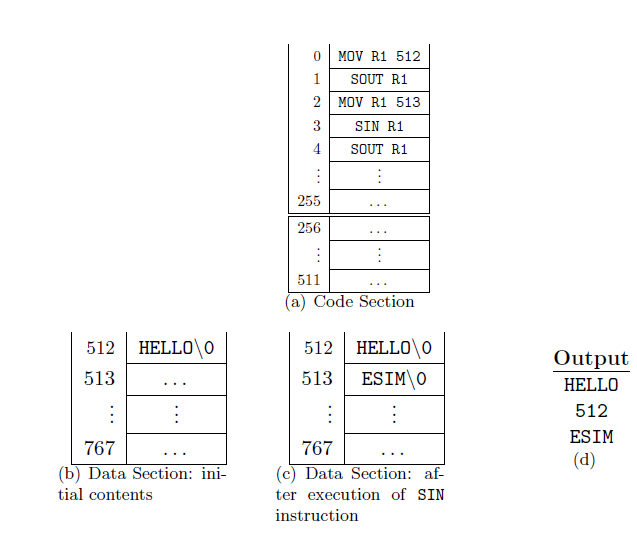

Introduction
All instructions in the SIM architecture are present in the ESIM architecture as well. The additional instructions provided by the ESIM architecture can be classified into privileged and unprivileged instructions. Refer to the SIM manual for the instruction set and addressing modes).
Processor Modes
The ESIM architecture is interrupt driven and uses a single processor. There are two modes of operation, the user mode and the kernel mode.
- User mode : All unprivileged instructions can be executed in this mode.
- Kernel mode : Both privileged and unprivileged instructions can be executed in this mode. Initially, the machine starts in kernel mode.
Classification
Unprivileged Instructions
All the instructions in the SIM architecture except the HALT instruction constitute the unprivileged instructions. In addition to that, we have five more instructions in the ESIM architecture, one interrupt service instruction and four instructions for string operations. They are:
- INT
Syntax : INT no
This instruction generates an interrupt to the kernel with no as a parameter. It pushes the current IP+1 value into the stack and switches the machine from User mode to Kernel mode. The address of the first instruction of the specified ISR is stored into the IP register. Execution is started at the address specified IP.
- SIN Rn - This instruction is used to take strings as input. The input string is stored in the data section of the program at the logical address specified by the value in Rn.
- SOUT Rn - This instruction prints the string stored at the logical address specified by the value in Rn. 
- STRCPY Ri Rj - This instruction copies the string stored in the data section at the logical address specified by the register Rj to the logical address specified by the register Ri.
- STRCMP Ri Rj - This instruction compares the strings stored in the data section at the logical addresses specified by the registers Ri and Rj and returns a value 0 if the strings are equal and -1 otherwise. The returned value is stored in Ri.
Privileged Instructions
There are four privileged instructions. These instructions can be executed only in kernel mode. They are:
- IRET
Syntax : IRET
IRET tells the processor that the interrupt handler has finished. This instruction pops the return address of the process from the stack into the IP register and switches the machine from kernel mode to user mode.
- LOAD
Syntax : LOAD pg_no block_no
This instruction loads the block specified by the block_no, from the disk, to the page specified by the pg_no, in the memory.
- STORE
Syntax : STORE block_no pg_no
This instruction stores the page specified by the pg_no, from the memory, to the block specified by the block_no, in the disk.
- HALT
Syntax : HALT
This instruction causes the simulator to halt immediately.